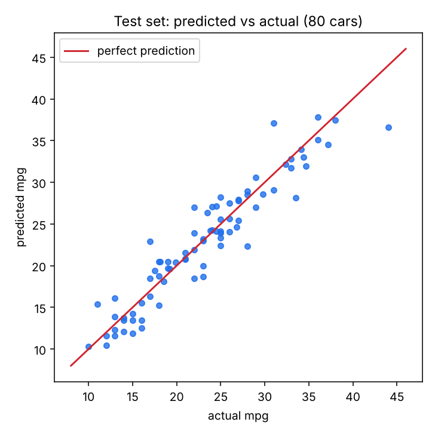

Links: GitHub repository | full notebook | data (CSV) | exported model
Can a car's fuel efficiency (mpg) be predicted from its design specifications alone (cylinders, displacement, horsepower, weight, acceleration, model year and origin), and which specifications matter most for the prediction?
The data covers cars from 1970 to 1982, so I only claim that the model describes this period, not modern cars. I do not claim that the specifications cause mpg, only that they predict it.
Source: the UCI Machine Learning Repository, Auto MPG dataset. One row is one car model.
First I split the data into 318 training cars and 80 test cars (80/20 split, random seed 42). The test cars are not used for any decision about preprocessing, models or tuning.
All of this is done inside one scikit-learn pipeline that is fitted on the training data only, so no information from the test set leaks in.
Baseline: predict the average mpg of the training cars for every car. Any real model has to beat this.
Methods tried:
| Model | CV MAE (mpg) |
|---|---|
| Linear regression | 2.683 ± 0.160 |
| Ridge (penalty 1) | 2.668 ± 0.160 |
| Ridge on log(mpg) (final) | 2.267 ± 0.114 |
| Random forest | 2.042 ± 0.097 |
| Gradient boosting | 1.978 ± 0.181 |
| Model | MAE | RMSE | R squared |
|---|---|---|---|
| Baseline (training mean) | 5.955 | 7.347 | -0.004 |
| Linear regression | 2.288 | 2.888 | 0.845 |
| Ridge on log(mpg) (final) | 1.772 | 2.382 | 0.894 |
| Random forest | 1.567 | 2.157 | 0.914 |
| Gradient boosting | 1.762 | 2.345 | 0.898 |
My final model misses by 1.77 mpg on average, compared with 5.96 mpg for the baseline. Taking the log of mpg was the most useful change: it lowered the cross-validation error from 2.67 to 2.27.
The random forest is a bit more accurate than my model (test MAE 1.57), and gradient boosting did best in cross-validation. I still chose ridge on log(mpg) because it can be explained from its coefficients and exported as a small file for this website. The test set has only 80 cars, so the small gaps between the better models should not be over-read.
Move the sliders to design a car. The page applies my ridge model (the numbers in model.json) in your browser and shows the predicted mpg with an approximate range.
Weight (lb): 2800
Horsepower: 93
Model year (19xx): 76
Displacement (cubic inches): 150
Acceleration (seconds to 60 mph): 15.5
Cylinders:
Origin:
Approximate range: loading...
This is approximate. The range comes from cross-validation errors: for about 80% of cars the true mpg fell inside it (81% of the 80 test cars). It only applies to cars like those in the 1970 to 1982 data.
I looked at this in two ways. First, the ridge coefficients on standardized inputs (these act on log(mpg), so a bigger absolute value means a bigger push). Second, I removed one specification at a time, refitted the model, and measured how much the cross-validation error grew.
| Specification | Coefficient | CV MAE rise if removed (mpg) |
|---|---|---|
| model year | +0.115 | +0.799 |
| weight | -0.218 | +0.266 |
| origin | -0.057 / +0.037 / +0.020 | +0.029 |
| horsepower | -0.054 | +0.014 |
| cylinders | -0.027 | -0.012 |
| displacement | +0.053 | -0.006 |
| acceleration | -0.007 | -0.009 |
Model year matters most, then weight. Cylinders, displacement and acceleration add almost nothing once the other specifications are known (removing them changes the error by less than 0.015 mpg, which is within noise).
The two views differ for a reason. Weight has the biggest coefficient, but removing it hurts less than removing model year, because displacement, horsepower and cylinders are strongly related to weight and can partly take over its job. Model year has no substitute. For the same reason, the positive coefficient on displacement should not be read as "bigger engines raise mpg". It comes from related inputs sharing credit.

Points close to the red line are good predictions. The model follows the line well, and the biggest misses are at the high-mpg end. The five largest errors on the test set were:
| Row in CSV | Specs | Actual | Predicted | Error |
|---|---|---|---|---|
| 394 | 4 cyl, 97 cu in, 52 hp, 2130 lb, 1982, Europe | 44.0 | 36.6 | -7.4 |
| 377 | 4 cyl, 91 cu in, 68 hp, 1970 lb, 1982, Japan | 31.0 | 37.1 | +6.1 |
| 275 | 6 cyl, 163 cu in, 125 hp, 3140 lb, 1978, Europe | 17.0 | 22.9 | +5.9 |
| 30 | 4 cyl, 140 cu in, 90 hp, 2264 lb, 1971, USA | 28.0 | 22.4 | -5.6 |
| 238 | 4 cyl, 98 cu in, 83 hp, 2075 lb, 1977, USA | 33.5 | 28.1 | -5.4 |
Four of the five are small, light four-cylinder cars, where very high or low mpg is hardest to predict from the specifications. Row 394 is a light 1982 car that got 44 mpg, about 7 mpg more than its specs suggest. Things the data does not contain (engine tuning, gearing, aerodynamics, how mpg was measured) are possible reasons, but I did not test that.
Yes: for 1970 to 1982 cars, design specifications predict mpg well. A ridge model on log(mpg) is wrong by about 1.8 mpg on average on unseen cars, compared with about 6 mpg for the average-mpg baseline, and it explains about 89% of the variation. Model year and weight matter most; cylinders, displacement and acceleration add little once those are known. More flexible models are somewhat more accurate, so there is a modest price for choosing a model that can be explained and run in the browser. The result describes this period and dataset and does not show that the specifications cause the efficiency.
Code and data: github.com/miriyalapriya/auto-mpg-project. No passwords, keys or private data are used. The dataset is public.
I used Python, pandas, NumPy, scikit-learn and Matplotlib for the analysis, Google Colab to run it, and GitHub Pages to host this site. I used an AI assistant (Claude) for planning the project, writing and debugging some notebook code (feature importance, error analysis, the error range and the JSON export), and for guidance and code while building this web page. I ran and checked the code and outputs myself, and I am responsible for every result.